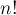

MAXimal
добавлено: 9 Sep 2008 19:28
редактировано: 20 Sep 2010 18:45
Содержание [скрыть]
Вычисление факториала по модулю
В некоторых случаях необходимо считать по некоторому простому модулю  сложные формулы, которые в том числе могут содержать факториалы. Здесь мы рассмотрим случай, когда модуль сравнительно мал. Понятно, что эта задача имеет смысл только в том случае, когда факториалы входят и в числитель, и в знаменатель дробей. Действительно, факториал и все последующие обращаются в ноль по модулю , однако в дробях все множители, содержащие , могут сократиться, и полученное выражение уже будет отлично от нуля по модулю .
сложные формулы, которые в том числе могут содержать факториалы. Здесь мы рассмотрим случай, когда модуль сравнительно мал. Понятно, что эта задача имеет смысл только в том случае, когда факториалы входят и в числитель, и в знаменатель дробей. Действительно, факториал и все последующие обращаются в ноль по модулю , однако в дробях все множители, содержащие , могут сократиться, и полученное выражение уже будет отлично от нуля по модулю .
Таким образом, формально задача такая. Требуется вычислить  по простому модулю , при этом не учитывая все кратные множители, входящие в факториал. Научившись эффективно вычислять такой факториал, мы сможем быстро вычислять значение различных комбинаторных формул (например, Биномиальные коэффициенты).
Алгоритм
Выпишем этот "модифицированный" факториал в явном виде:
При такой записи видно, что "модифицированный" факториал распадается на несколько блоков длины (последний блок, возможно, короче), которые все одинаковы, за исключением последнего элемента:
![n!_{\%p} = \underbrace{ 1 \cdot 2 \cdot \ldots \c[...]](../tex2png/cache/5685c685028e80cd7e723828c12d3880.png)
Общую часть блоков посчитать легко — это просто , которую можно посчитать программно или по теореме Вильсона (Wilson) сразу найти . Чтобы перемножить эти общие части всех блоков, надо найденную величину возвести в степень по модулю , что можно сделать за  операций (см. Бинарное возведение в степень; впрочем, можно заметить, что мы фактически возводим минус единицу в какую-то степень, а потому результатом всегда будет либо
операций (см. Бинарное возведение в степень; впрочем, можно заметить, что мы фактически возводим минус единицу в какую-то степень, а потому результатом всегда будет либо  , либо
, либо  , в зависимости от чётности показателя. Значение в последнем, неполном блоке тоже можно посчитать отдельно за . Остались только последние элементы блоков, рассмотрим их внимательнее:
, в зависимости от чётности показателя. Значение в последнем, неполном блоке тоже можно посчитать отдельно за . Остались только последние элементы блоков, рассмотрим их внимательнее:
И мы снова пришли к "модифицированному" факториалу, но уже меньшей размерности (столько, сколько было полных блоков, а их было ). Таким образом, вычисление "модифицированного" факториала мы свели за операций к вычислению уже . Раскрывая эту рекуррентную зависимость, мы получаем, что глубина рекурсии будет , итого асимптотика алгоритма получается .
Реализация
Понятно, что при реализации не обязательно использовать рекурсию в явном виде: поскольку рекурсия хвостовая, её легко развернуть в цикл.
int factmod (int n, int p) { int res = 1; while (n > 1) { res = (res * ((n/p) % 2 ? p-1 : 1)) % p; for (int i=2; i<=n%p; ++i) res = (res * i) % p; n /= p; } return res % p; }
Эта реализация работает за .